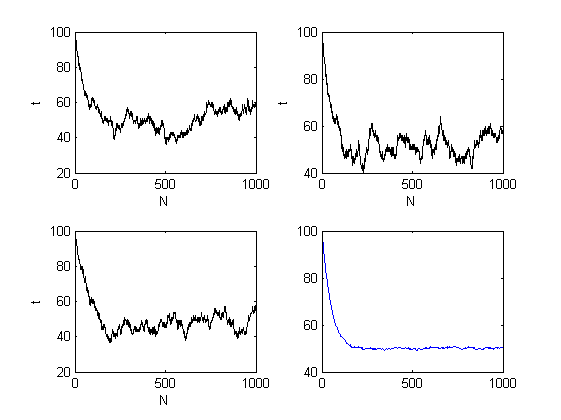

NParticle=100; % число частиц системы NStep=1000; % длина еденичной реализации NTrial=100; % объем ансабля реализации E=Ensemble(100,NParticle,NStep);% вчисление ансмбля реализаций % Визуализация выбранных из ансамбля реализаций зависимостей n=n(t) xlabel('N'); ylabel('t'); subplot(2,2,1),plot (i,E(1,:,1),'k') xlabel('N'); ylabel('t'); subplot(2,2,2),plot (i,E(1,:,50),'k') xlabel('N'); ylabel('t'); subplot(2,2,3),plot (i,E(1,:,100),'k') xlabel('N'); ylabel('t'); % вычисление средней по ансамблю реализаций зависимостей n=n(t) for i=1:NStep for j=1:NTrial s(j)=E(1,i,j); end Em(i)=mean(s); end % визуализация средней по ансамблю i=1:NStep; subplot(2,2,4),plot(i,Em);